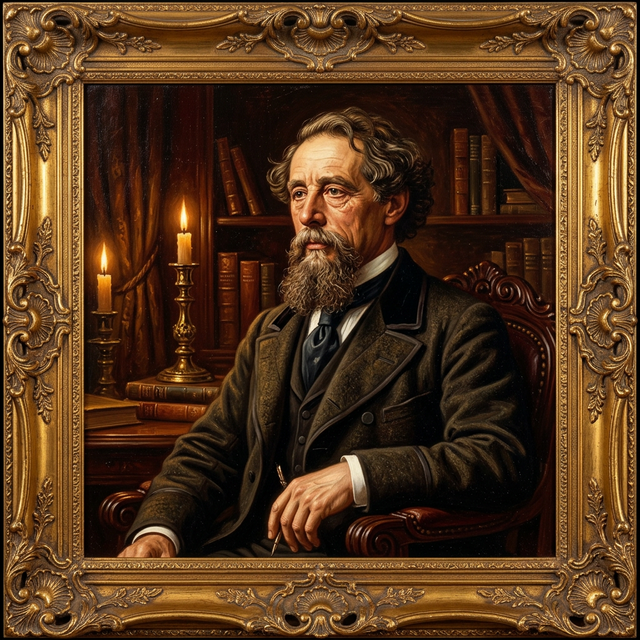

Friends, Rivals & Fellow Travellers
"We were on the same side of the story... we were always on the same side."
One of the most remarkable literary friendships in English literature — a bond of genius, restless energy, and creative ambition that transformed both men's art.

Novelist, Editor, Theatrical Impresario, Closest Friend
The friendship between Wilkie Collins and Charles Dickens, which began in 1851 and endured until Dickens's death in 1870, was one of the defining relationships of both men's lives. They were brought together by a shared passion for amateur theatre — Collins took a role in a production of Bulwer-Lytton's Not So Bad As We Seem, directed by Dickens — and discovered an immediate mutual sympathy.
Dickens was twelve years Collins's senior and already the most celebrated novelist in the English-speaking world. Yet the relationship was never merely that of master and pupil. Dickens admired Collins's meticulous plotting and his daring willingness to tackle topics — sexual transgression, drug use, women's legal injustice — that Dickens himself found difficult to address directly.
Collins, in turn, drew confidence from Dickens's encouragement, his editorial acumen, and his vast readership. It was in Dickens's journal All the Year Round that Collins published his two greatest novels, The Woman in White and The Moonstone.
Away from the written page, Dickens and Collins were inseparable companions on adventures both respectable and scandalous. They undertook walking tours of England and trips to Paris, frequented the bohemian night-spots of the city, attended prize-fights, and explored the seedier quarters of London after dark — all in the name of "research."
Both men were possessed of enormous physical energy and a shared appetite for life. Their correspondence crackles with private jokes, elaborate pet names (Dickens called Collins "The Genius of the Stone Ages"), and plans for the next escapade.
Collins's easy-going bohemianism provided a release valve for Dickens, whose public image demanded respectability. In Collins's company, the great novelist could relax his guard and indulge his love of adventure.
Dickens and Collins collaborated on numerous works, including:
The influence ran both ways: Collins's plotting skills influenced Dickens's later, more tightly constructed novels, while Dickens's emotional intensity deepened Collins's characterisation.
Perhaps the most fateful of all their collaborations was The Frozen Deep. In 1857, Dickens mounted professional performances of the play at the Gallery of Illustration in London, with himself in the role of the self-sacrificing Richard Wardour. Dickens threw himself into the part with such intensity that audiences — and fellow performers — were moved to tears.
When the production transferred to Manchester, professional actresses were hired to replace the amateur ladies of the cast. Among them was eighteen-year-old Ellen Ternan. Dickens fell passionately in love with her — a passion that would lead to his separation from his wife Catherine, a public scandal, and a secret relationship that lasted until his death.
Collins, ever tolerant and non-judgmental, stood by his friend throughout the upheaval. His own unconventional domestic arrangements gave him a sympathy for Dickens's predicament that few others could offer.
Collins moved in a world of painters, writers, actors, and unconventional spirits.
Painter & Close Friend
The genial Victorian painter Augustus Egg was one of Collins's closest companions. The two, along with Dickens, travelled together to Switzerland and Italy in 1853 — a journey that cemented all three friendships. Egg's most famous painting, the narrative triptych Past and Present, reflects the same social concerns — fallen women, broken families — that pervade Collins's fiction.
Pre-Raphaelite Painter & Brother-in-Law
Millais, a founder of the Pre-Raphaelite Brotherhood, became connected to the Collins family when he married Effie Gray (formerly Mrs. John Ruskin) — but more directly through his friendship with Wilkie and his brother Charles, who had himself been a Pre-Raphaelite associate. Millais illustrated Collins's work and the two remained friends throughout their lives.
Brother, Painter & Author
Wilkie's younger brother Charles was a talented painter associated with the Pre-Raphaelite Brotherhood. His painting Convent Thoughts (1851) was a minor sensation. Charles later married Kate Dickens, the novelist's daughter, further entwining the Collins and Dickens families. Plagued by ill health, he turned from painting to writing in his later years.
Journalist & Lifelong Friend
Edward Pigott, a radical journalist and later Examiner of Plays, was one of Collins's oldest and most trusted friends. Their correspondence, spanning decades, provides some of the most candid insights into Collins's private life, opinions, and creative struggles.
Actor & Theatre Partner
The charismatic French-born actor Charles Fechter was a close friend to both Collins and Dickens in the 1860s. His innovative, naturalistic acting style revolutionised the Victorian stage. He starred in several stage adaptations of Collins's works and was instrumental in bringing Collins's plays to a wider audience.
Novelist & Fellow Sensation Writer
Reade was Collins's closest literary ally after Dickens's death. Both men championed the sensation novel and shared a passion for social reform through fiction. Reade's Hard Cash and It Is Never Too Late to Mend tackled asylum abuse and prison conditions with a fervour that matched Collins's own campaigning spirit.
Collins was a man of the theatre through and through. He wrote over fifteen plays, adapted several of his own novels for the stage, and was deeply involved in production, casting, and direction. The Victorian stage was a lucrative market, and Collins — always anxious about money — pursued theatrical success with the same energy he brought to his novels.
His most successful stage works included The Frozen Deep (with Dickens), The Woman in White (dramatised in 1871), The New Magdalen (a theatrical triumph in 1873), and No Thoroughfare (which ran simultaneously in London and Paris). He also wrote The Red Vial, The Lighthouse, and Rank and Riches.
The amateur theatricals organised by Dickens were a crucial arena. Collins acted alongside Dickens in numerous productions at Tavistock House and later at the Gallery of Illustration. These performances were semi-professional affairs, lavishly mounted, with Collins serving variously as actor, stage manager, and dramatist.
Collins's theatrical instincts profoundly shaped his fiction. His novels are full of dramatic reversals, carefully timed revelations, and set-piece "scenes" that read like stage directions. The multi-narrator technique itself has a theatrical quality — each narrator steps forward to deliver their testimony, then yields the stage to the next.